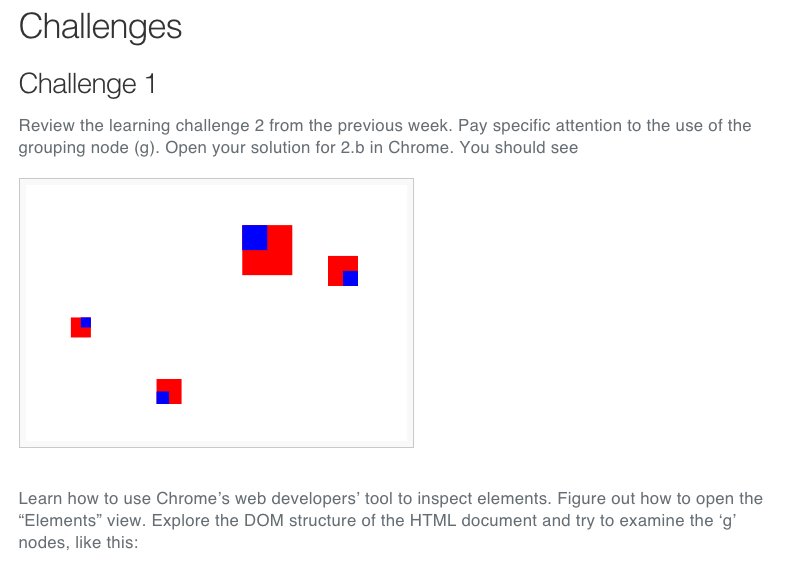
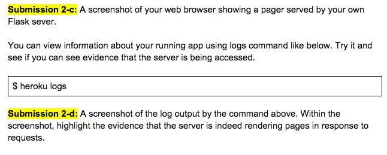
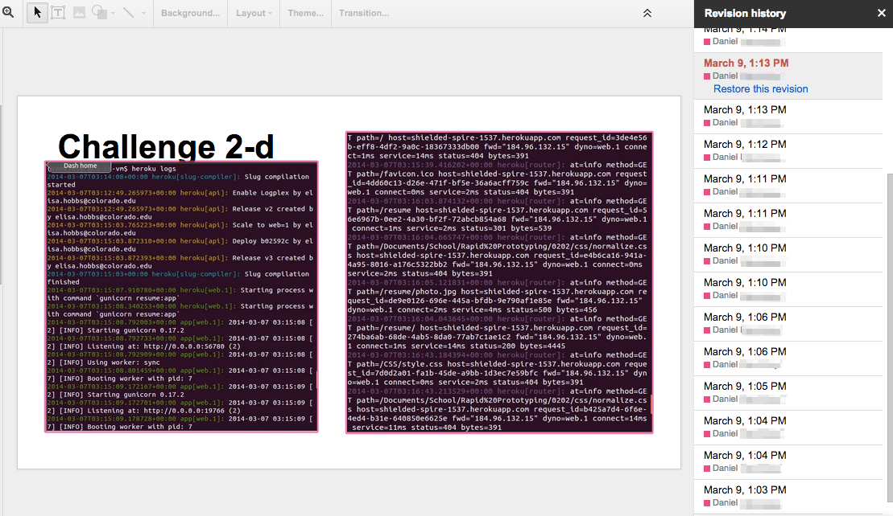
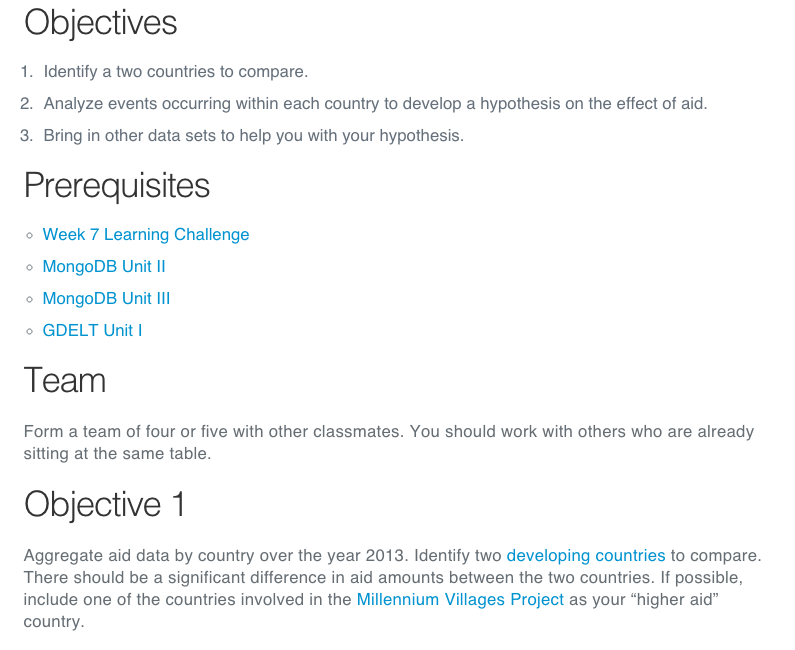
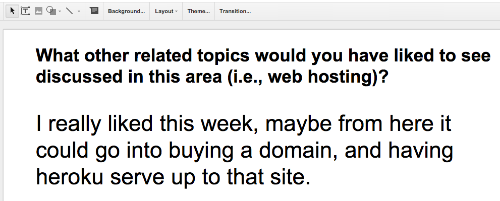
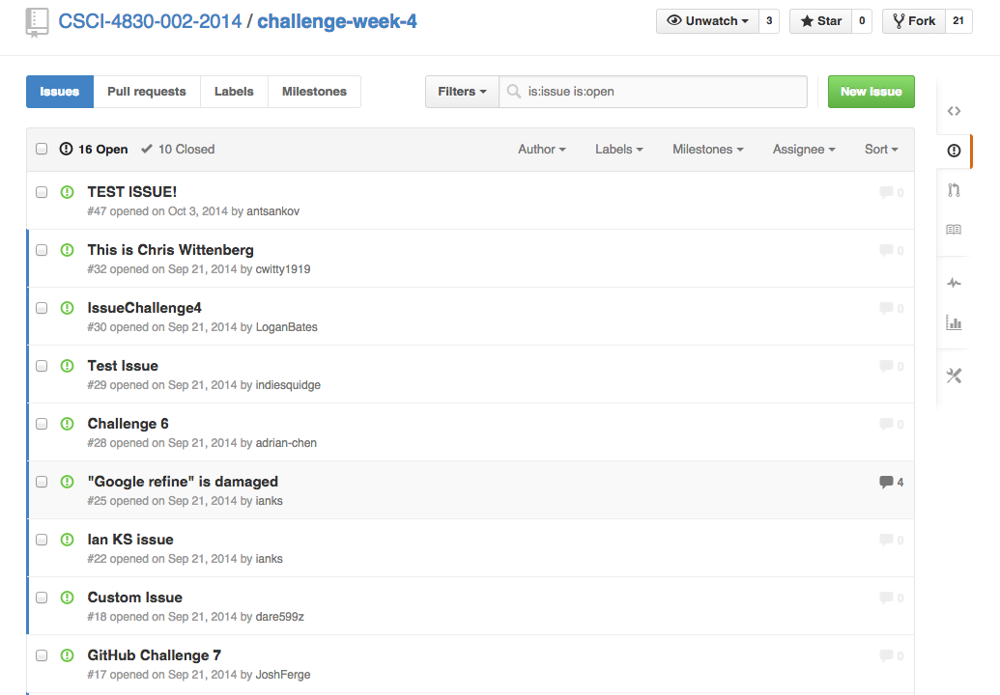
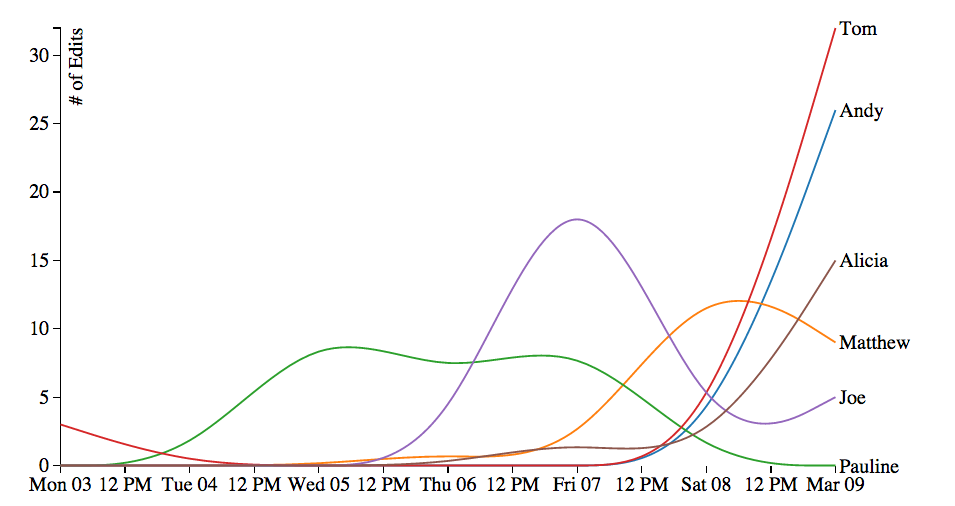
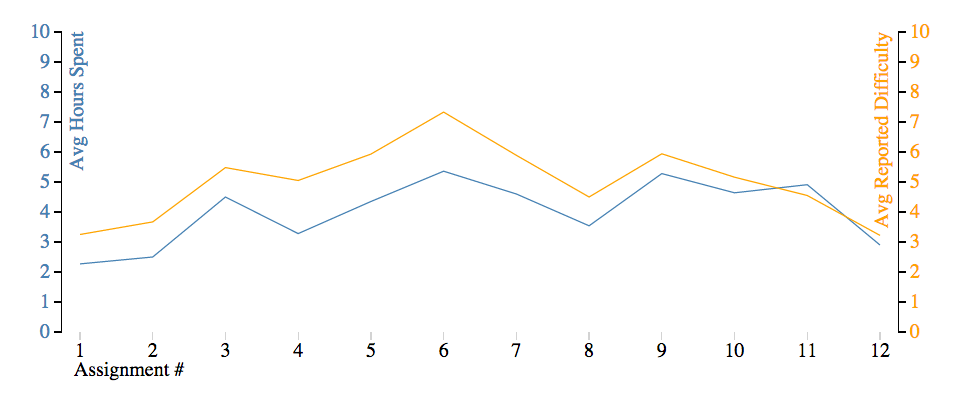

Beyond the Flipped Classroom
Learning By Doing Through Challenges and Hackathons
DBER-ified!
by Michael Skirpan
Want to follow along or go back to something?
Go to http://mwskirpan.com/DBERSpring2015
Since we don't know eachother
I started as a PhD student in the School of Education, but have now moved my research to Computer Science, my advisor is Tom Yeh
I research:
- Educational Technologies
- Inclusive, Experiential, and Democratic Classroom Design
- Whether or not we actually get insights from "Big Data"
- Ways of visualizing data
What's ahead
- Framework and Background
- Our Class Model
- Findings
- Future
- Discussion
I'll try to move fast!
Discussion I'm Looking For:
How generalizable is this type of model (i.e., outside of CS)?
When I get my own classroom (starting Fall 2015), how can I better achieve my goals?
What future metrics would you like to see?
Framework
Or, why I don't just stand up front and lecture
Democratic Education
- Ownership over one's education
- Learn how to motivate and direct oneself
- An equal (or any!) voice in classroom decisions
- Intrest-driven
- Can be an engine for critical pedgagogy
Cf. Jerry Mintz, Isaac Graves, Ben Kirshner (CU!), Paolo Freire, Meira Levinson, Amy Gutmann, Michael Apple, John Dewey
Or the old addage says it best..
If you always do what you're told, you'll always be told what to do.
This is a real problem!
Experiential Education
- Experience is pedagogy
- Emphasis on skills over facts
- Failure and iteration is good
- Student-centered rather than teacher-centered
Cf. John Dewey, Maria Montessori, Jean-Jacques Rousseau, Lev Vygotsky, Mitch Reznik
So what's this have to do with the flipped classroom
It was a design inspiration, but we changed it quite a bit
| Mazur's Flipped Classroom |
Our Design |
| At-home Video Lecture |
Learning Challenges |
| Problem Workshops |
In-class Hackathon |
| Clicker Quizzes |
Milestone Submissions |
Peer Learning |
Small Group Coding |
What we were hoping to improve from traditional teaching:
- Students walk away with tangible skills that have been experientially verified
- Get students more engaged by giving them a stake in their education
- More inclusive classroom by making it a working community
- Real projects that invest students in continuing with the discipline
- Get real insight into individual learning processes
What we actually did
We implemented the class twice: Spring 2014 for a User-Centered Design Class and Fall 2014 for Big Data.
Class Components: Overview
- Learning Challenges at Home
- Hackathons in Class
- Journals and Forums for Feedback and Formative Assessment
- Semester Projects
Differences between Fall and Spring
- Spring - Google Docs vs. Fall - GitHub and Class Website
- Spring - Learning Journals vs. Fall - Student Forums
- Spring - Small Final Project in Teams vs. Fall - Big Final Project as Class
- Spring - No Lecture vs. Fall - 30 mins for Lecture, Discussion, or Presentation
We can answer the why's of these changes during discussion
- Assignment Posted Tuesday Due Sunday
- Checkpoint-based Tutorial Style
- Submission Template
- Reflection Questions


Understanding Our Students
Google Docs Paradigm

Flow of Class
- Show and tell + Short Discussion
- Instructors or industry/academic speaker motivates hackathon with talk
- Students are either assigned or choose groups
- Navigate to assignment to see objectives and prerequisites
- Come up with implementation plan
- Submit milestones using template
- Share with class
- Outside judges give feedback
What a student would see

Spring 2014
Each week, we provided a series of qualitative and quantitative questions that students submitted with homework. We used this feedback as formative assessment to change each week.

Fall 2014
To be truer to "coding communities", instead of journals we asked students to post questions and feedback on a public forum.

Spring 2014
- Small groups worked on separate projects
- Projects were proposed 2/3 way into semester
- Milestones showed progress
- Final submission need only be prototype
Fall 2014
- Project development began first week of class with 'mini-project'
- Final project was a class effort toward a massive installation (Thanks EEF!)
- Students each submitted an idea then voted what would be implemented
- End result was a full implementation for a showcase exhibit
Students Procrastinate

Now we have mid-week milestones due!
Time = Perceived Difficulty

Now we break up difficult tasks into smaller units
Some Spring Numbers
| Measure |
Percent |
| Attendance |
92% |
| Assignment Completion |
89% |
Sadly, we're still analyzing fall data for comparison, but here are some preliminary findings:
- Public forums are good for peer learning, but bad for feedback.
- Bigger project yields bigger results
- Students respond well to choice (highest completion rates and most work put in for things that were voted/chosen)
My own courses
Important to realize that while I helped shape the class, I only had partial control. Now I will have the chance to completely design:
Fall 2015 - Technology in the Digital Era
Spring 2016 - Data Insights
Things I want to add or work on:
- Better balance between offering a framework and giving space for application of ideas
- More student choice around topic trajectory
- Projects that contribute to an authentic community
- Self-imposed learning goals
- Catalyze critical discussion
Thanks for your time!
Now, let's talk.